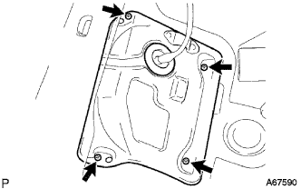
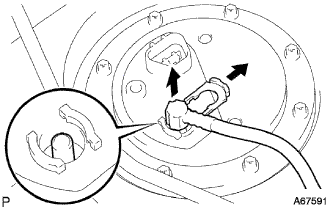

Fuel pump (1NZ-FE (4WD)) Remove |
| 1. Remove the rear seat back ASSY |
 |
Make the rear seat back in advance.
Remove the two clips in the figure in the figure.
 |
Turn over the rear seat back cover, remove the two bolts, and remove the rear seat back Assy.
| 2. Remove the rear seat cushion asy |
 |
Press the lock of the front lock in the direction of the arrow in the figure to remove it.
Pass the rear seat belt through the rear seat cushion cover and pad back rubber band.
Remove the hook at the rear hook at the rear seat cushion assembly, and remove the rear seat cushion assessy.
| 3. Remove the rear floor service hall cover |
|  |
Turn the floor mat.
Remove the four screws and remove the rear floor service hall cover.
Cut the fuel pump connector.
| 4. Fuel leakage prevention work |
 |
Cut the connector for fuel pump ASSY.
Engine start
Start the engine.
After the engine stops naturally, turn off the ignition switch.
Crank the engine again and confirm that it will not start.
Remove the fuel tank cap and remove the pressure in the fuel tank.
Remove the battery's minihana stormy.
referenceAttach the fuel pump Assessed connector.
| 5. Fuel tank main tube cut off |
|  |
Spread the tube joint clip and pull out in the direction of the arrow.
 |
Pull out the main tube and separate it.
| 6. Fuel suction tube Assy W/Pump & gauge removed |
 |
Remove the eight bolts and remove the fuel tank vent tube set plate.
 |
Cut the fuel hose in the figure and remove the fuel suction tube Assy W/Pump & Gauge from the fuel tank.
Remove the gasket from the fuel suction tube ASSY W/pump & gauge.